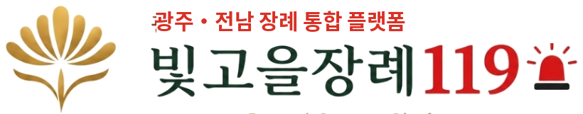
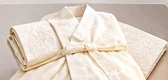
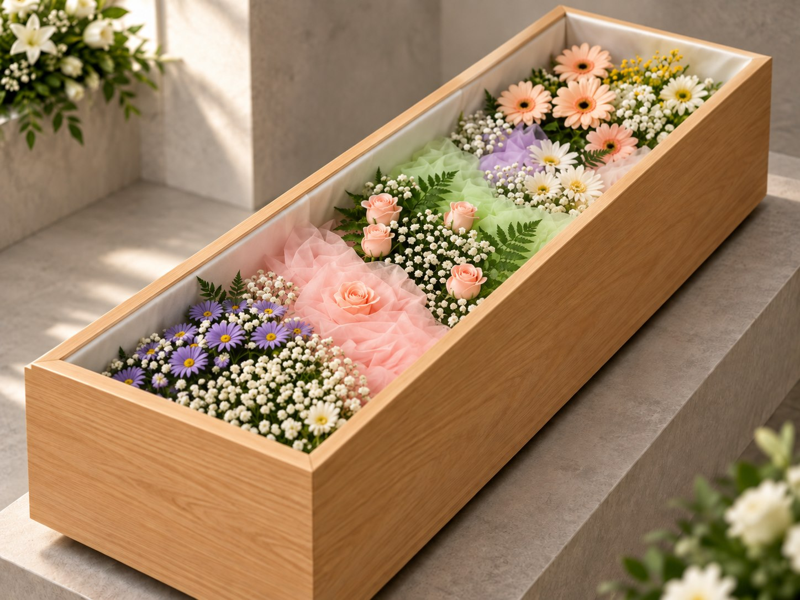
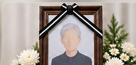
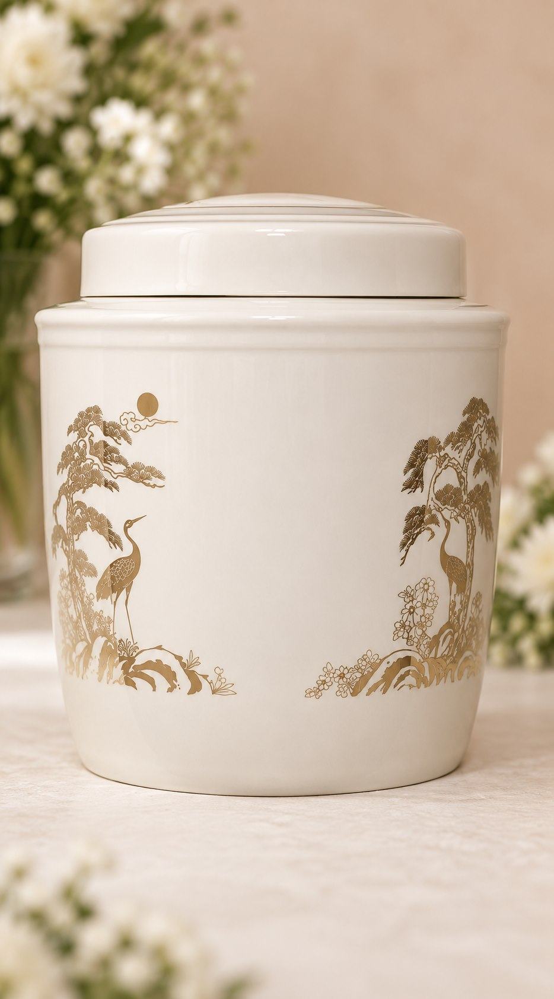
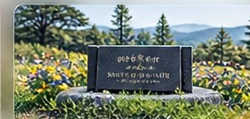

가족끼리 조용하게 보내드리고 싶을 때
가까운 가족만 모여 차분하게 고인을 모시고 싶은 경우.
빈소 없이 가족만 모여 조용히. 안치·입관·발인·화장 등 필요한 절차는 정성껏 모십니다.
“비용은 투명한 정찰제로, 예우는 최고로.”
임종 후 1533-9657 한 통이면 운구차가 바로 출동합니다.
정중히 모셔 안치실로. 출동비·초렴비까지 포함입니다.
마지막 모습을 단정하게. 지도사가 정성껏 입관합니다.
가족과 함께 조용히 발인하고 화장을 진행합니다.
봉안당은 고급 진공 유골함, 자연장은 표지로 모십니다.
※ 임종 후 1533-9657 한 통이면, 위 전 과정을 빛고을장례119가 책임지고 진행합니다.

무빈소250 제공 서비스위 모든 서비스를 250만원 그대로 —
어떤 추가비용도 청구하지 않습니다.
※ 화장장 사용료 등 사전에 공지된 별도 실비(공공요금·장지 비용·관외출동)는 보상 대상에서 제외됩니다.
임종 후 연락 즉시 운구차가 출발합니다.
위생적인 안치실에 편안히 모십니다.
마지막 모습을 단정하게 정리합니다.

수의 일체를 제공합니다.

고인의 마지막 길을 함께할 오동나무 화장관을 준비합니다.

결관바(소창), 알코올, 탈지면, 예단, 보공, 염습 및 입관 용 한지, 종교별 말씀지 등 기타 장례 및 입관용품 일체를 제공합니다.
전문 입관 지도사 2명이 정성껏 모십니다.

영정사진을 제작해 드립니다.

발인 시 리무진 차량을 운행합니다.

봉안당 안치 시 제공(62만원 상당).

광주영락공원 자연장 시 표지 제작·각인 포함.
지도사 1명 · 입관 시 2명 배정.

부고 소식을 문자로 정중하게 대신 전해 드립니다.
화장·사후 행정 등 서류를 대행합니다.
보이지 않는 곳까지 살펴, 마지막 예우를 다합니다.
“빈소는 없어도, 예우까지 생략하지 않습니다.”
광주 무빈소 장례 현장을 지켜온 현직 전문가가 염습·입관·발인까지 직접 진행합니다.
외주·하청도, 전국 콜센터도 아닙니다. 광주 현장을 가장 잘 아는 현직 전문가가 임종부터 안치까지 책임집니다 — 지역 특화 기업이기에 가능합니다.
빈소·조문 접대는 생략하고, 염습·입관·발인·화장 등 필요한 절차는 그대로 진행합니다. ‘아무것도 안 하는 장례’가 아니라, 고인과 가족에게 더 집중하는 선택입니다.
“‘싸게’ 유인한 뒤 하나씩 추가 청구하는 방식이 아닙니다.”
장례식장 비용은 물론, 상조가 따로 받는 것까지 전부 포함한
“광주 전문 특화 무빈소 상품”입니다.
장례식장 비용까지 포함한 투명 정찰가
※ 임종 후부터 안치까지, 저희가 제공하는 모든 서비스를 250만원 정찰가로 — 진행 중 추가청구가 없습니다.
※ 화장장 사용료와 장지(봉안당·자연장) 시설 비용은 공공요금·실비로 별도입니다. 그 외 저희가 제공하는 서비스에는 추가비용이 없습니다. 안치 방식에 따라 구성(유골함/표지)이 달라지며, 정확한 총액은 상담 시 먼저 안내해 드립니다.
| 비교 항목 | 일반 저가 무빈소 | 빛고을 무빈소250 |
|---|---|---|
| 광고 가격 | ✕ 매우 저렴하게 홍보 | ✓ 250만원 정찰가 |
| 실제 총액 | ✕ 진행 중 항목마다 추가청구 | ✓ 250만원 그대로 · 추가 0원 |
| 출동·초렴비 | ✕ 별도 청구 많음 | ✓ 포함 |
| 영정사진 | ✕ 별도 청구 많음 | ✓ 포함 |
| 고인 메이크업 | ✕ 별도·생략 많음 | ✓ 포함 |
| 유골함 | ✕ 별도 청구 | ✓ 고급 진공 유골함 포함 (소비자가 62만원 상당) |
| 장례식장 비용 | ✕ 별도 | ✓ 포함 |
| 의료폐기물 처리비 | ✕ 별도 청구하는 곳 있음 | ✓ 포함 |
| 예우·의전 | ✕ 최소 인력 | ✓ 지도사 1명 + 입관 2명, 최고 예우 |
| 지역 이해 | ✕ 낮음 | ✓ 광주 전문 특화 |
‘저가’로 유인한 뒤 항목마다 추가 청구하는 곳이 많습니다. 비교는 ‘가장 싼 광고가’가 아니라 추가비용까지 포함한 총액과 예우로 하세요.
화장장 사용료·장지 시설 비용은 어느 곳이든 공통으로 드는 실비입니다.
※ “무빈소 장례 = 부의금 못 받는다”는 오해입니다. 무빈소는 조문 접대를 생략하는 것일 뿐, 부의금을 받을지 여부는 오롯이 가족의 선택입니다.
빈소가 없어도 소식은 이렇게 전하실 수 있습니다. 아래 무빈소 부고 문자 예시를 그대로 참고해 쓰시고, 상황에 맞게 바꾸시면 됩니다.
※ 색으로 표시된 부분은 예시입니다. 실제 부고 문구는 가족 상황과 종교·관계에 맞춰 상담 때 함께 다듬어 드립니다.
무빈소 장례는 더 이상 특별한 선택이 아닙니다. 최근 여러 언론은 “빈소 없는 이별”이 빠르게 늘고 있다고 전합니다. 형식보다 고인과 가족에게 집중하려는 분위기, 그리고 과도한 비용에 대한 부담이 맞물린 변화입니다.
최근 장례업계 추정 무빈소 장례 비중이 약 20%까지 올랐고, 지방 장례식장에서는 40~50%에 이르는 곳도 있습니다.
부산일보·한국일보 보도(2026)“앞으로 무빈소·간소한 장례를 하겠다”고 답한 비율. (만 19~69세 1,000명 대상 조사)
엠브레인 트렌드모니터, 2026.5전통 3일장 평균 비용과 무빈소 장례 비용의 차이. 비용 부담이 확산의 큰 이유로 꼽힙니다.
한국소비자원 추산·한국일보 보도“코로나19 이후 조문 횟수가 줄었다”는 응답. 간소한 장례에 대한 인식이 사회 전반으로 퍼졌습니다.
보건복지부 장사시설 수급 종합계획※ 외부 언론 보도와 공개 조사 자료를 정리한 것으로, 인용 수치는 조사 시점·기관에 따라 달라질 수 있습니다. 빛고을장례119는 특정 방식을 강요하지 않으며, 가족의 뜻에 맞는 선택을 도와드립니다.
가까운 가족만 모여 차분하게 고인을 모시고 싶은 경우.
많은 조문객을 계속 맞이하고 상을 차리는 일이 버거운 경우.
빈소 사용료·접객 비용을 덜어 꼭 필요한 절차 중심으로.
평소 조용한 이별을 바라셨던 고인의 뜻을 따르고 싶은 경우.
가까운 가족만으로 마지막을 함께하고 싶은 경우.
무빈소여도 가족이 함께 고인을 기리는 시간을 원하는 경우.
빈소를 차리지 않고, 조문을 받지 않습니다. 가족만 모여 안치·입관·발인·화장을 진행하는, 가장 조용하고 간소한 방식입니다.
작은 빈소를 차려 소규모로 조문을 받습니다. 가족·가까운 친지 중심으로, 부담은 줄이되 최소한의 조문 자리는 마련합니다. 가족장 보기 →
가족의 선택에 따라 친척·지인에게 부고를 알릴 수 있습니다. 조문은 받지 않으면서 소식만 전하는 것도 가능합니다.
마음을 전하고 싶은 분들을 위해 계좌를 안내할 수도, 가족 뜻에 따라 정중히 사양할 수도 있습니다.
가족 의사에 맞는 부고 문구와 안내 방법까지, 상담 때 함께 준비해 드립니다.
가까운 분이 꼭 뵙고 싶어 하시면, 가족과 상의해 짧게 인사드릴 수 있도록 조율해 드립니다. 부담이 되지 않는 선에서 유연하게 진행합니다.
필요하신 부분은 상담 시 함께 안내해 드립니다.
※ 상담 전에 필요한 항목과 예상 비용을 먼저 설명해 드립니다. 이용하기 전에 비용을 먼저 아는 것 — 빛고을장례119의 원칙입니다.
안치·염습·입관, 오동나무 관·수의, 영정사진·고인 메이크업, 운구·발인 리무진, 진공 유골함까지 — 무빈소 장례에 필요한 항목은 250만원 정찰가에 모두 포함해 드립니다. 다만 아래 세 가지는 공공요금·개인 선택·지역 조건이라 성격상 별도입니다.
※ 화장장 사용료는 어느 업체를 이용하셔도 동일하게 드는 공공요금입니다. 그 외 진행 비용은 250만원 정찰가에 포함해 드리며, 상담에서 총액을 투명하게 안내해 확인하고 진행하실 수 있습니다.
「장사 등에 관한 법률」 제6조에 따라 사망(또는 사산)한 때부터 24시간이 지난 뒤에야 화장·매장을 할 수 있습니다. 무빈소 장례라도 이 시간은 지켜야 하므로, 화장장 예약 일정을 함께 조율해 절차가 지체되지 않도록 준비해 드립니다.
단, 감염병으로 사망해 시장·군수·구청장이 확산 방지를 위해 긴급 조치가 필요하다고 인정한 경우, 임신 7개월 미만의 사산아 등은 24시간 이내에도 화장이 가능합니다.광주 지역은 영락공원 등 공설 화장시설을 이용하며, 예약은 e하늘 장사정보시스템을 통해 진행됩니다. 예약과 일정 조율을 저희가 도와드립니다.
근거: 장사 등에 관한 법률 제6조(매장 및 화장의 시기)
생계·의료·주거급여 기초생활수급자가 사망하면, 장제를 실제로 치른 분에게 「국민기초생활보장법」에 따른 장제급여(1구당 약 80만 원)가 지급됩니다.
광주광역시는 여기에 더해 「광주광역시 복지장례(공영장례) 지원 조례」를 운영합니다. 무연고자·저소득층(기초수급·차상위 등)이 빈소 마련과 장례 절차를 안정적으로 치를 수 있도록 공영장례를 지원합니다.신청은 사망자 주소지의 읍·면·동 행정복지센터에서 하며, 사망진단서·신분증·통장 사본 등이 필요합니다. 지원 대상·금액은 연도와 자치구에 따라 달라질 수 있어, 저희가 상담 시 해당 구청·주민센터 확인을 함께 도와드립니다.
근거: 국민기초생활보장법 제14조(장제급여) · 광주광역시 복지장례 지원 조례
※ 위 안내는 관련 법령·조례를 정리한 것으로, 실제 지원 대상·금액·절차는 관할 행정복지센터(주민센터) 및 광주광역시 확인이 필요합니다.
아닙니다. 무빈소 장례여도 부의금(조의금)은 받으실 수 있습니다. 부고에 조의금 계좌를 함께 안내하면 오시지 못하는 분도 마음을 전하실 수 있고, 조문은 사양하고 소식만 전하는 것도 가능합니다. 반대로 가족 뜻에 따라 받지 않기로 하셔도 됩니다. ‘무빈소 = 부의금 못 받음’은 오해이며, 받을지 여부는 가족의 선택입니다.
안치·염습·입관, 관·수의·직계상복, 운구 차량, 의전 진행까지 무빈소에 필요한 항목은 저희 비용에 대부분 포함해 광주 최저가 수준으로 모십니다. 성격상 별도인 것은 화장장 사용료(공공요금)·유골함·봉안당/수목장 등 장지 비용뿐이며, 이 부분도 상담에서 총액으로 먼저 투명하게 안내드려 진행 중 갑자기 늘어나는 청구가 없습니다. ‘가장 싼 금액’만 보고 정하면 추가청구로 총액이 더 커지는 곳이 많으니, 추가비용까지 포함한 총액과 예우를 함께 비교하세요.
네. 장례식장 시설은 이용하고 장례 진행은 현장 경력이 풍부한 전담 의전팀이 직접 모셔, 불필요한 비용을 걷어내고 동일 조건 기준 광주에서 가장 낮은 수준의 합리적인 비용으로 안내해 드립니다. 규모가 작아도 예우는 최고 수준으로 모십니다. 정확한 비용은 상황에 따라 달라지므로 상담 시 먼저 안내해 드립니다.
무빈소 부고 문자에는 ① 고인·상주와의 관계와 성명, ② 별세 일시, ③ 빈소 없이 조용히 모신다는 안내와 조문 사양 여부, ④ (받으실 경우) 조의금 계좌 또는 (사양 시) 정중한 사양 문구, ⑤ 상주 성명과 연락처를 담으면 됩니다. 이 페이지 위쪽에 ‘조문 사양+계좌 안내형’과 ‘조문·부의금 모두 사양형’ 두 가지 예시를 그대로 참고하실 수 있으며, 종교(기독교·천주교·불교)나 가족 상황에 맞춘 문구는 상담 때 함께 다듬어 드립니다.
네. 무빈소 장례도 고인을 정성껏 씻기고(염습) 입관하는 절차를 그대로 진행합니다. 조문객을 받지 않을 뿐, 고인을 모시는 예우는 동일합니다.
가능합니다. 가족 상황과 화장장 예약 일정에 맞춰 정할 수 있습니다. 법적으로 사망 후 24시간이 지나야 화장이 가능해, 일정은 함께 조율해 드립니다.
네. 입관 전후나 발인 전에 가족이 모여 조용히 마지막 인사를 나누는 시간을 가질 수 있습니다. 원하시는 방식으로 준비해 드립니다.
가족의 선택에 따라 친척·지인에게 부고를 알릴 수 있습니다. 조문은 받지 않으면서 소식만 전하는 것도 가능합니다.
마음을 전하고 싶은 분들을 위해 조의금 계좌를 안내할 수도, 가족 뜻에 따라 정중히 사양할 수도 있습니다. 두 경우 모두 상담 때 함께 정리해 드립니다.
무빈소 장례는 빈소를 차리지 않지만, 고인 안치와 입관 등은 안치 시설을 이용합니다. 가족 상황에 맞는 방법을 상담 시 안내해 드립니다.
광주 지역은 영락공원 등 공설 화장시설을 이용하며, 예약은 e하늘 장사정보시스템을 통해 진행됩니다. 일정 조율을 저희가 도와드립니다.
물론입니다. 아직 결정하지 못하셨어도 괜찮습니다. 무빈소 장례부터 장지 선택까지 함께 고민하고 안내해 드립니다.
가족의 뜻에 따라 상복이나 단정한 검정 계열 복장을 갖추실 수 있습니다. 규모가 작아도 고인을 모시는 예의는 그대로 지킬 수 있습니다.
네. 가족의 종교에 맞춰 예배·연도·염불 등 의식과 절차를 준비해 드리며, 필요하시면 성직자 연계도 도와드립니다.
무빈소 장례는 초라한 장례가 아니라, 조문 접대의 부담을 덜고 고인과 가족에게 집중하는 방식입니다. 원하시면 가까운 분들과 짧은 추모 시간을 따로 가지실 수도 있습니다.
네. 조용한 분위기라 오히려 편안하게 함께하실 수 있습니다. 가족 상황에 맞춰 일정과 동선을 배려해 드립니다.
가능합니다. 임종 직후 1533-9657로 연락 주시면 24시간 언제든 안치부터 절차까지 바로 안내해 드립니다. 임종 전 미리 상담해두시는 것도 좋습니다.
네. 장례를 조용히 치른 뒤, 사십구재나 가족·지인 대상의 추모 자리를 나중에 따로 마련하시는 분들도 계십니다. 방법을 함께 안내해 드립니다.
「장사 등에 관한 법률」 제6조에 따라 사망(사산) 후 24시간이 지나야 화장·매장이 가능합니다. 다만 감염병으로 사망해 시장·군수·구청장이 확산 방지를 위해 긴급 조치가 필요하다고 인정한 경우, 임신 7개월 미만 사산아 등은 24시간 이내에도 화장할 수 있습니다.
네. 생계·의료·주거급여 기초생활수급자가 사망하면 장제를 치른 분에게 장제급여(1구당 약 80만 원)가 지급됩니다. 광주광역시는 별도로 「복지장례(공영장례) 지원 조례」를 운영해 저소득층·무연고자의 장례를 지원합니다. 신청은 사망자 주소지 행정복지센터(주민센터)에서 하며, 저희가 확인을 도와드립니다.
현재 상황과 가족이 원하시는 방식을 말씀해 주시면, 필요한 절차와 예상 비용을 먼저 안내해 드립니다. 임종 전 상담도, 갑작스러운 상황에서의 상담도 가능합니다.
새벽이든 명절이든 24시간 연결됩니다.
지금 상황을 말씀해주시면, 받으실 수 있는 지원부터 알려드리겠습니다.